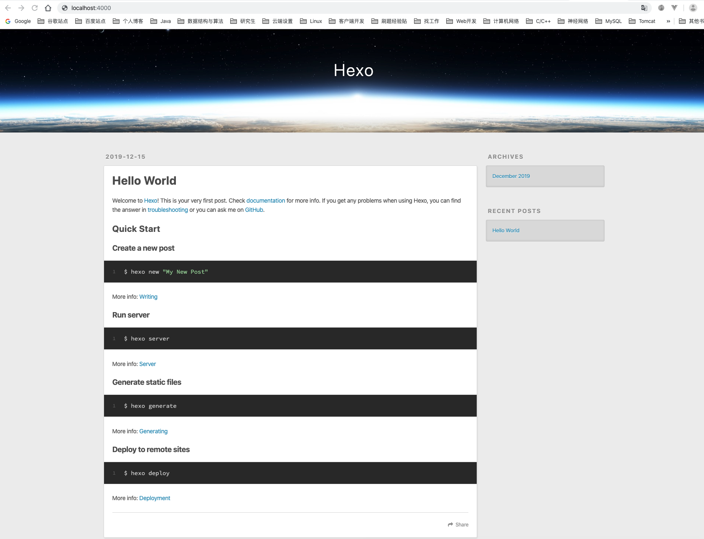
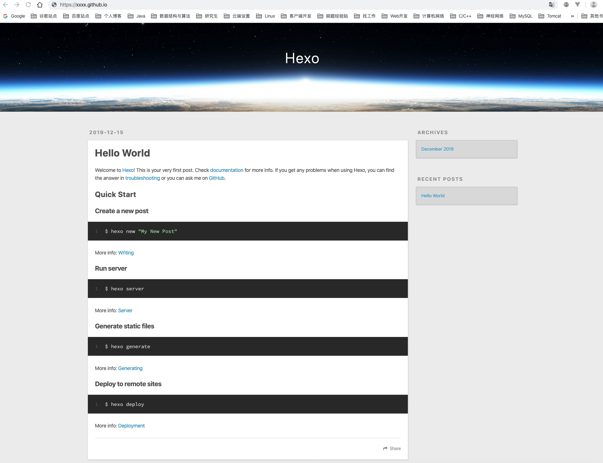

useage_of_hexo
1、预备工作
- 官网看一看，即可安装 git, node, ssh, in your pc
- 在GitHub上得有一个账号
2、使用npm安装hexo
1 | npm install -g hexo |
3、本地pc环境初始化
hexo初始化
1 | hexo init project-name #等待片刻 |
本地启动测试
1 | hexo s |
此时，浏览器中打开默认的网址，能看到如下页面:

4、创建github仓库
现在官网创建名称为 xxx.github.io的仓库
注意：
- xxx为你的github的昵称，
- 创建一个readme文件（空仓库无法创建github pages）
- 仓库是公开的，否则要开会员才行
设置github pages
- 选择master分支，就行了
5、hexo与github仓库绑定
修改_config.yml文件
修改文件最后的deploy标签：
1 | deploy: |
创建静态页面
1 | hexo g |
部署下载github仓库
1 | hexo d |
1）可能找不到git, 使用npm 安装一个插件:
npm install hexo-deployer-git --save
2）可能要输入github的正确的账户名密码
再次执行hexo d or hexo deploy
此时，浏览器中打开网址https://xxxxx.github.io，也能看到如下页面:

6.发布文章
终端cd到project-name文件夹下，执行如下命令新建文章：
1
hexo new artical-name
名为artical-name.md的文件会建在目录/project-name/source/_posts下。
文章编辑完成后，终端cd到blog文件夹下，执行如下命令来发布:
1 | hexo generate # 生成静态页面 |
转载请注明来源，欢迎对文章中的引用来源进行考证，欢迎指出任何有错误或不够清晰的表达。可以在下面评论区评论，也可以邮件至 1056615746@qq.com
文章标题:useage_of_hexo
本文作者:John Doe
发布时间:2019-12-15, 18:59:47
最后更新:2019-12-15, 19:25:48
原始链接:http://yoursite.com/2019/12/15/useage-of-hexo/版权声明: "署名-非商用-相同方式共享 4.0" 转载请保留原文链接及作者。